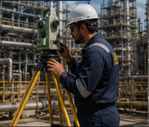
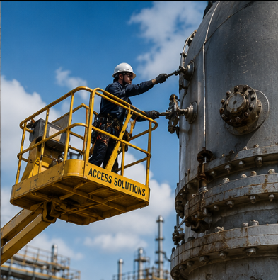
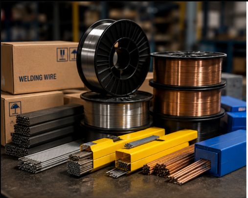

Technical Skills
Reliable technical people for site and project work where capability, safety and communication matter.
Enquire +Technical resources, inspection support and industrial product supply shaped around your operational needs.
Reliable technical people for site and project work where capability, safety and communication matter.
Enquire +
Non-destructive testing support for asset integrity, inspection planning and operational confidence.
Enquire +Practical inspection support for maintenance, project and compliance-driven industrial requirements.
Enquire +
Site surveys and technical review support to help teams make better operational decisions.
Enquire +
Access planning and support for work carried out in demanding industrial locations.
Enquire +
Alternative quality consumables and supplies selected for availability, performance and cost control.
Enquire +Share your site, project or supply requirement and DUKE will respond with a practical next step.